Plataforma de formación arbitralEntrena tus decisiones como en la sala VAR
Casos reales basados en las Reglas del Juego de la IFAB, en Castellano y Euskera, listos para tu escuela de árbitros.
- Puntos totales
- 0
- Precisión global
- 0%
- Racha actual
- 0
Estás jugando como invitado. Inicia sesión para guardar tu progreso en la nube.
Jugadas aleatorias, feedback inmediato y explicación reglamentaria tras cada decisión.
Empezar → Examen Oficial (25)Simulacro cronometrado de 25 jugadas sin repetición, con acta final descargable en pantalla.
Empezar → Mis PartidosConsulta tu historial de exámenes, tu precisión y tu evolución como árbitro.
Ver →